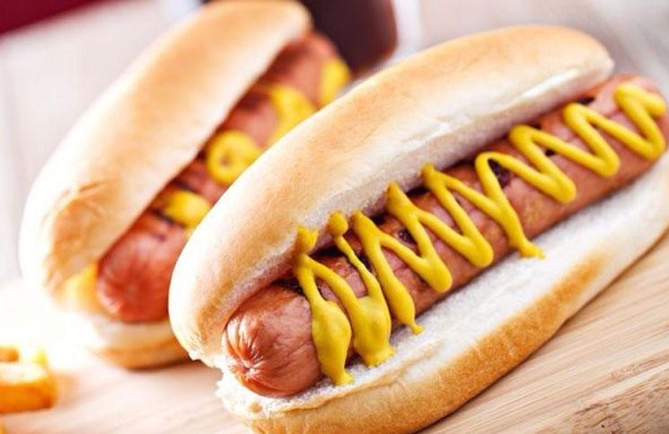

Ingredientes:
- Salchichas
- Pan de pancho, o cualquier pan
- Mayonesa o cualquier aderezo deseado
- Agua
Pasos:
- Hervir el agua.
- Agregar las salchichas al agua hirviendo.
- Una vez hechas, retirar del agua las salchichas.
- Hacer un corte al pan, introducir la salchicha.
- Si se desea, agregar mayonesa o el aderezo deseado.
Página principal